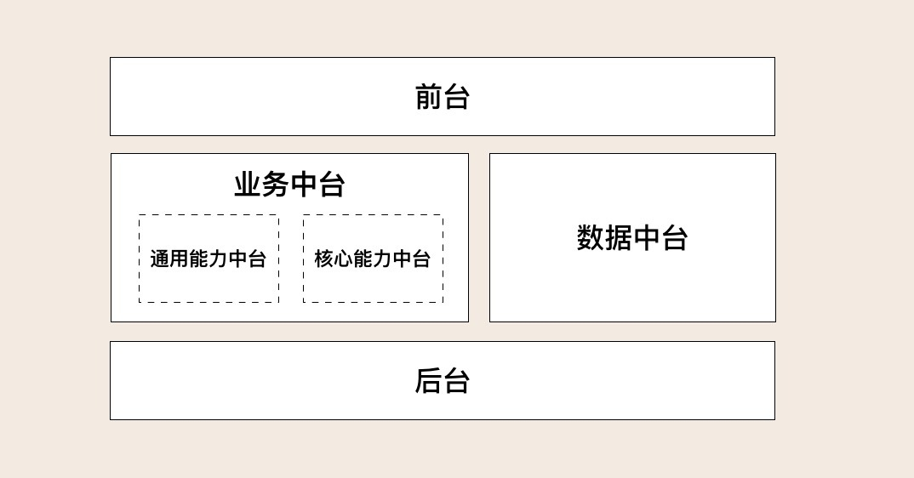
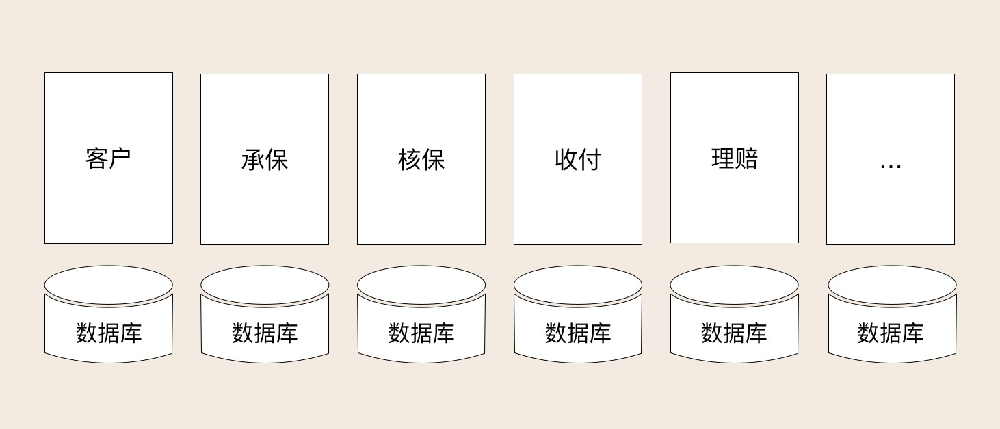
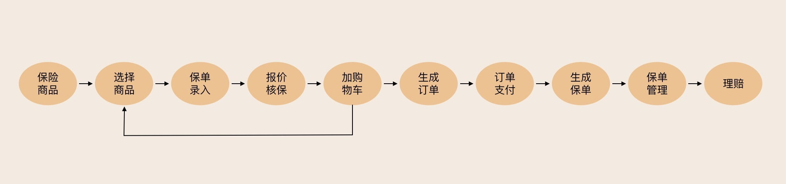

- 00 开篇词 学好了DDD，你能做什么？.md.html
- 01 领域驱动设计：微服务设计为什么要选择DDD.md.html
- 02 领域、子域、核心域、通用域和支撑域：傻傻分不清？.md.html
- 03 限界上下文：定义领域边界的利器.md.html
- 04 实体和值对象：从领域模型的基础单元看系统设计.md.html
- 05 聚合和聚合根：怎样设计聚合？.md.html
- 06 领域事件：解耦微服务的关键.md.html
- 07 DDD分层架构：有效降低层与层之间的依赖.md.html
- 08 微服务架构模型：几种常见模型的对比和分析.md.html
- 09 中台：数字转型后到底应该共享什么？.md.html
- 10 DDD、中台和微服务：它们是如何协作的？.md.html
- 11 DDD实践：如何用DDD重构中台业务模型？.md.html
- 12 领域建模：如何用事件风暴构建领域模型？.md.html
- 13 代码模型（上）：如何使用DDD设计微服务代码模型？.md.html
- 14 代码模型（下）：如何保证领域模型与代码模型的一致性？.md.html
- 15 边界：微服务的各种边界在架构演进中的作用？.md.html
- 16 视图：如何实现服务和数据在微服务各层的协作？.md.html
- 17 从后端到前端：微服务后，前端如何设计？.md.html
- 18 知识点串讲：基于DDD的微服务设计实例.md.html
- 19 总结（一）：微服务设计和拆分要坚持哪些原则？.md.html
- 20 总结（二）：分布式架构关键设计10问.md.html
- 答疑：有关3个典型问题的讲解.md.html
- 结束语 所谓高手，就是跨过坑和大海.md.html
- 捐赠
09 中台：数字转型后到底应该共享什么？
你好，我是欧创新。
在上一讲中我们了解了分层架构的设计思想，并提到了这种设计思想对中台建设十分有利，那么今天我就来讲一讲中台。
中台是数字化转型的一个热门话题。继阿里提出中台概念后，很多人又提出了各种各样的中台。今天我们主要讨论业务中台和数据中台。作为企业数字化中台转型的整体，我也会顺带聊一聊前台和后台的一些设计思路。
不少企业其实在很多年前就有了建大平台的实践经验，那在中台被热议时，我相信你一定听过很多质疑声。比如，有人说：“中台就是个怪名词，它不就是已经做了好多年的平台吗？”确实，中台源于平台，但它的战略高度要比平台高很多。
学完这一讲，你就会清楚地知道平台与中台的差异在什么地方？中台到底是什么？传统企业的中台建设方式是否应该和阿里一样…
平台到底是不是中台？
阿里提出中台战略后，很多企业开始拿着自己的系统与阿里的中台对标。有的企业在十多年前就完成了大一统的集中式系统拆分，实现了从传统大单体应用向大平台的演进，他们将公共能力和核心能力分开建设，解决了公共模块重复投入和重复建设的问题。
那这是不是阿里所说的中台呢？在回答这个问题之前，我们不妨先了解一下阿里的中台到底是什么样的。
阿里业务中台的前身是共享平台，而原来的共享平台更多的被当作资源团队，他们承接各业务方的需求，并为业务方在基础服务上做定制开发。 阿里业务中台的目标是把核心服务链路（会员、商品、交易、营销、店铺、资金结算等）整体当作一个平台产品来做，为前端业务提供的是业务解决方案，而不是彼此独立的系统。
下面我们分析一下传统企业大平台战略和阿里中台战略的差异。
平台只是将部分通用的公共能力独立为共享平台。虽然可以通过 API 或者数据对外提供公共共享服务，解决系统重复建设的问题，但这类平台并没有和企业内的其它平台或应用，实现页面、业务流程和数据从前端到后端的全面融合，并且没有将核心业务服务链路作为一个整体方案考虑，各平台仍然是分离且独立的。
平台解决了公共能力复用的问题，但离中台的目标显然还有一段差距！
中台到底是什么？
“一千个读者就有一千个哈姆雷特”，这句话形容技术圈对中台的定义再合适不过了，说法很多。
先看一下阿里自己人对中台的定义：“中台是一个基础的理念和架构，我们要把所有的基础服务用中台的思路建设，进行联通，共同支持上端的业务。业务中台更多的是支持在线业务，数据中台提供了基础数据处理能力和很多的数据产品给所有业务方去用。业务中台、数据中台、算法中台等等一起提供对上层业务的支撑。”
再看一下思特沃克对中台的定义：“中台是企业级能力复用平台。”
综上，我们可以提炼出几个关于中台的关键词：共享、联通、融合和创新。联通是前台以及中台之间的联通，融合是前台流程和数据的融合，并以共享的方式支持前端一线业务的发展和创新。
我认为，中台首先体现的是一种企业级的能力，它提供的是一套企业级的整体解决方案，解决小到企业、集团，大到生态圈的能力共享、联通和融合问题，支持业务和商业模式创新。通过平台联通和数据融合为用户提供一致的体验，更敏捷地支撑前台一线业务。
中台来源于平台，但中台和平台相比，它更多体现的是一种理念的转变，它主要体现在这三个关键能力上：对前台业务的快速响应能力；企业级复用能力；从前台、中台到后台的设计、研发、页面操作、流程服务和数据的无缝联通、融合能力。
其中最关键的是快速响应能力和企业级的无缝联通和融合能力，尤其是对于跨业经营的超大型企业来说至关重要。
数字化转型中台应该共享什么？
相对互联网企业而言，传统企业的渠道应用更多样化，有面向内部人员的门店类应用、面向外部用户的互联网电商以及移动 APP 类应用。这些应用面向的用户和场景可能不同，但其功能类似，基本涵盖了核心业务能力。此外，传统企业也会将部分核心应用的页面或 API 服务能力开放给生态圈第三方，相互借力发展。
为了适应不同业务和渠道的发展，过去很多企业的做法是开发很多独立的应用或 APP。但由于 IT 系统建设初期并没有企业级的整体规划，平台之间融合不好，就导致了用户体验不好，最关键的是用户并不想装那么多 APP。
为了提升用户体验，实现统一运营，很多企业开始缩减 APP 的数量，开始通过一个 APP 集成企业内的所有能力，联通前台所有的核心业务链路。
由于传统企业的商业模式和 IT 系统建设发展的历程与互联网企业不是完全一样的，因此传统企业的中台建设策略与阿里中台战略也应该有所差异，需要共享的内容也不一样。

由于渠道多样化，传统企业不仅要将通用能力中台化，以实现通用能力的沉淀、共享和复用，这里的通用能力对应 DDD 的通用域或支撑域；传统企业还需要将核心能力中台化，以满足不同渠道的核心业务能力共享和复用的需求，避免传统核心和互联网不同渠道应用出现“后端双核心、前端两张皮”的问题，这里的核心能力对应 DDD 的核心域。
这就属于业务中台的范畴了，我们需要解决核心业务链路的联通和不同渠道服务共享的问题。除此之外，我们还需要解决系统微服务拆分后的数据孤岛、数据融合和业务创新等问题，这就属于数据中台的范畴了，尤其是当我们采用分布式架构以后，我们就更应该关注微服务拆分后的数据融合和共享问题了。
综上，在中台设计和规划时，我们需要整体考虑企业内前台、中台以及后台应用的协同，实现不同渠道应用的前端页面、流程和服务的共享，还有核心业务链路的联通以及前台流程和数据的融合、共享，支持业务和商业模式的创新。
如何实现前中后台的协同？
企业级能力往往是前中后台协同作战能力的体现。
如果把业务中台比作陆军、火箭军和空军等专业军种的话，它主要发挥战术专业能力。前台就是作战部队，它需要根据前线的战场需求，对业务中台的能力进行调度，实现能力融合和效率最大化。而数据中台就是信息情报中心和联合作战总指挥部，它能够汇集各种数据、完成分析，制定战略和战术计划。后台就是后勤部队，提供技术支持。下面我们分别来说说。
1. 前台
传统企业的早期系统有不少是基于业务领域或组织架构来建设的，每个系统都有自己的前端，相互独立，用户操作是竖井式，需要登录多个系统才能完成完整的业务流程。

中台后的前台建设要有一套综合考虑业务边界、流程和平台的整体解决方案，以实现各不同中台前端操作、流程和界面的联通、融合。不管后端有多少个中台，前端用户感受到的就是只有一个前台。

在前台设计中我们可以借鉴微前端的设计思想，在企业内不仅实现前端解耦和复用，还可以根据核心链路和业务流程，通过对微前端页面的动态组合和流程编排，实现前台业务的融合。
前端页面可以很自然地融合到不同的终端和渠道应用核心业务链路中，实现前端页面、流程和功能复用。
2. 中台
传统企业的核心业务大多是基于集中式架构开发的，而单体系统存在扩展性和弹性伸缩能力差的问题，因此无法适应忽高忽低的互联网业务场景。而数据类应用也多数通过 ETL 工具抽取数据实现数据建模、统计和报表分析功能，但由于数据时效和融合能力不够，再加上传统数据类应用本来就不是为前端而生的，因此难以快速响应前端一线业务。
业务中台的建设可采用领域驱动设计方法，通过领域建模，将可复用的公共能力从各个单体剥离，沉淀并组合，采用微服务架构模式，建设成为可共享的通用能力中台。
同样的，我们可以将核心能力用微服务架构模式，建设成为可面向不同渠道和场景的可复用的核心能力中台。 业务中台向前台、第三方和其它中台提供 API 服务，实现通用能力和核心能力的复用。

但你需要记住这一点：在将传统集中式单体按业务职责和能力细分为微服务，建设中台的过程中，会产生越来越多的独立部署的微服务。这样做虽然提升了应用弹性和高可用能力，但由于微服务的物理隔离，原来一些系统内的调用会变成跨微服务调用，再加上前后端分离，微服务拆分会导致数据进一步分离，增加企业级应用集成的难度。
如果没有合适的设计和指导思想，处理不好前台、中台和后台的关系，将会进一步加剧前台流程和数据的孤岛化、碎片化。
数据中台的主要目标是打通数据孤岛，实现业务融合和创新，包括三大主要职能：
一是完成企业全域数据的采集与存储，实现各不同业务类别中台数据的汇总和集中管理。
二是按照标准的数据规范或数据模型，将数据按照不同主题域或场景进行加工和处理，形成面向不同主题和场景的数据应用，比如客户视图、代理人视图、渠道视图、机构视图等不同数据体系。
三是建立业务需求驱动的数据体系，基于各个维度的数据，深度萃取数据价值，支持业务和商业模式的创新。
相应的，数据中台的建设就可分为三步走：
第一步实现各中台业务数据的汇集，解决数据孤岛和初级数据共享问题。
第二步实现企业级实时或非实时全维度数据的深度融合、加工和共享。
第三步萃取数据价值，支持业务创新，加速从数据转换为业务价值的过程。
数据中台不仅限于分析型场景，也适用于交易型场景。它可以建立在数据仓库或数据平台之上，将数据服务化之后提供给业务系统。基于数据库日志捕获的技术，使数据的时效性大大提升，这样就可以为交易型场景提供很好的支撑。
综上，数据中台主要完成数据的融合和加工，萃取数据业务价值，支持业务创新，对外提供数据共享服务。
3. 后台
很多人提到中台时自然会问：“既然有前台和中台，那是否有后台，后台的职责又是什么？”
我们来看一下阿里对前台、中台和后台的定位。
前台主要面向客户以及终端销售者，实现营销推广以及交易转化；中台主要面向运营人员，完成运营支撑；后台主要面向后台管理人员，实现流程审核、内部管理以及后勤支撑，比如采购、人力、财务和 OA 等系统。
那对于后台，为了实现内部的管理要求，很多人习惯性将这些管理要求嵌入到核心业务流程中。而一般来说这类内控管理需求对权限、管控规则和流程等要求都比较高，但是大部分管理人员只是参与了某个局部业务环节的审核。这类复杂的管理需求，会凭空增加不同渠道应用前台界面和核心流程的融合难度以及软件开发的复杂度。
在设计流程审核和管理类功能的时候，我们可以考虑按角色或岗位进行功能聚合，将复杂的管理需求从通用的核心业务链路中剥离，参考小程序的建设模式，通过特定程序入口嵌入前台 APP 或应用中。
管理需求从前台核心业务链路剥离后，前台应用将具有更好的通用性，它可以更加容易地实现各渠道前台界面和流程的融合。一个前台应用或 APP 可以无差别地同时面向外部互联网用户和内部业务人员，从而促进传统渠道与互联网渠道应用前台的融合。
总结
今天我们主要讨论了中台建设的一些思路。企业的中台转型不只是中台的工作，我们需要整体考虑前台、中台和后台的协同、共享、联通和融合。
前台通过页面和流程共享实现不同渠道应用之间的前台融合，中台通过 API 实现服务共享。而前台、业务中台和数据中台的融合可以实现传统应用与互联网应用的融合，从而解决“后端双核心、前端两张皮”的问题。能力复用了，前台流程和数据融合了，才能更好地支持业务的融合和商业模式的创新。
© 2019 - 2023 Liangliang Lee. Powered by gin and hexo-theme-book.